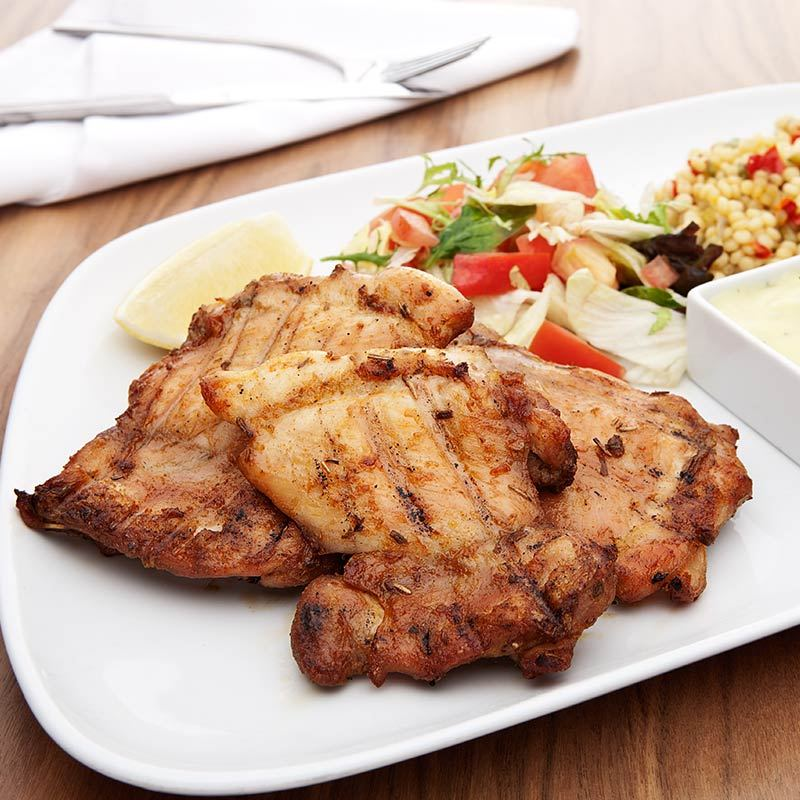

Chicken kolbasti is a traditional dish from the Egyptian countryside.
Pound each cornish game hen flat with a meat mallet. Brush hens with mixture of salt, pepper, lemon and onion juices. Let stand for at least 15 minutes. Place hens in hot butter in heavy pan; cover and cook until brown, then turn hens; cover and brown other side. When brown, add water and continue cooking until hens are done. Serve with natural sauce or sauce thickened with browned flour.